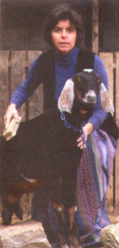

A Wall Street Journal staffer once came up with the ultimate economic indicator-the goat index. When times get tough, people buy goats. And with good reason: Goats offer an inexpensive source of milk, meat, fiber, and (not least of all) companionship. They require neither fancy food nor elaborate housing.
Getting Started
Once you decide what kind of goats you want (see MOTHER'S GUIDE TO GOATS ), try to find a local seller. The goats will already be acclimated to your area and will take to the move more easily than goats trucked in from a distance. Avoid sale barns, since you never know what diseases might lurk there. If you plan to keep your goats in close quarters, another thing to avoid is horns. Goats on open range need horns for protection. but a goat in confinement can easily injure another goat, or you, by playfully turning its head at the wrong moment. Some goats are polled (born without horns). The rest should have their horn buds cauterized as soon as the buds start to show (usually by two weeks of age).
Goats are social creatures and enjoy companionship, so start out with at least two. Goats can be, and often are, raised in a manageable herd of about six. Those six may be all does (females) which you'll need if you want milk, kids, or both. Does also produce the softest fiber. If you wish to raise goats for meat, transport, or as pets, wethers (castrated males) make a good choice. A wether is as muscular as a buck (male) but as gentle as a doe (for seasonal breeding, rather than housing and feeding an intact buck year around. many goat owners find it cheaper and less hassle to use artificial insemination or a stud service).
Milk production requires annual kidding, so if you opt for dairy goats, prepare to deal with a burgeoning population. Goat kids are so cute and cuddly, it's tempting to keep them all. But if you do, your facilities will soon be stretched to the limit and you-and your goats-will be unhappy. Kids or surplus adults may be sold to help pay for the herd's upkeep. Prices vary from under $100 for a scrub goat, to several hundred for a registered purebred, to several thousand for a top breeder. The highest price ever paid for a float was for an Angora buck. May you be so lucky as to have such a goat born in your herd.
Home sweet goat home
Goats need nothing more than a simple shelter to protect them from rain, wind, and sun. A building that is well-ventilated but draft-free serves these purposes and also retains animal-generated body heat in cold weather. Each goat needs at least 15 square feet of living space (miniature breeds need 10 square feet). When goats must reach through head holes to get feed and water outside their stall, they waste less hay, so allow one head hole for every five goats for water and for a salt and soda feeder (more on that later), and one hole per animal for hay.
Provide a manger to keep hay off the ground, where it would get trampled and fouled. A floor of packed earth is easy to clean and allows urine to drain away. Bedding gives the animals something dry to lie on. Goats inevitably waste lots of hay, and wasted hay makes economical bedding. For Angora goats, however, a floor covering of wood slats is preferable, since bits of bedding would otherwise stick in their hair.
It isn't entirely true that a fence that won't hold water won't hold a goat, but it isn't far off the mark. Goats are agile and curious. If they can't get over or under a fence, they will look for a way to get through it. Failing that, they will lean on the fence and crush it down. An electric tension fence (see "A Fence That Lasts a Lifetime," issue #130) is the least expensive and most effective goat-proof option. Not only will it resist your goats' chal lenges, but it will also deter coyotes, dogs, and other predators.
Feeding
Goats are neither exclusively grazers nor exclusively browsers, but instead are opportunistic feeders. They enjoy fresh, well-managed pasture as much as they relish brushy undergrowth. If a prized rosebush or a freshly planted sapling comes their way, they'll eagerly devour that, too. Although goats enjoy harvesting their own food, they get along perfectly well when all their hay and grain is brought to them. Hay, in fact, should always be available-even to goats that spend the better part of their days foraging. Early cut grass-legume mix makes a fine, all-purpose hay. Each animal will eat about 4 pounds a day, or close to 1,500 pounds per year (a miniature goat eats half that).
Grain, on the other hand, is a dietary supplement. Grain or a commercially prepared ration (called "concentrate" because it is a concentrated source of nutrients) is needed by dairy goats for good milk production. It is also needed by pregnant does as their time nears. by nursing does, and by any goat at times when browse or good hay is limited.
Since dietary needs vary from goat to goat and from season to season, when it comes to concentrate, the eye of the master fattens the goat. One to two pounds of concentrate is usually sufficient in most cases. For a dairy doe, the rule of thumb is to feed one pound of concentrate for every two pounds (quart) of milk produced. Additional supplements include sodium bicarbonate (baking soda) and trace mineral salt in loose form. Sodium bicarbonate is a goat's form of Rolaids. Trace mineral salt serves as a source of sodium chloride and other important minerals. Offer soda and saltfree choice-let your goats decide how much they need.
Clean water is the cheapest yet most important nutrient in a goat's diet and should be available at all times. Goats, being ruminants, need a generous amount of water to keep stomach fermentation going. Lactating does need lots of water to make milk. All goats drink more water in warm weather.
Health Care
Goats are a hardy bunch and, properly h oused and fed, are unlikely to come down with some dreaded disease. If you start out with healthy goats, chances are pretty good they will stay that way. Goats are not likely to succumb to pneumonia (a disease to which they are highly susceptible) if their housing is well-ventilated and draft-free. Sound housing is doubly important for newborn kids and for freshly-sheared Angora and cashmere goats.
Overeating disease, or enterotoxemia, can spell death for a goat that binges on concentrate or chows down on spring pasture without first breakfasting on hay. Your goats shouldn't be affected if you limit access to concentrate, feed each day's ration in two portions, and serve hay free choice. If, on the other hand, you use excess concentrate to push milk or fiber production, protect your goats from enterotoxemia with a vaccination and an annual booster.
Worms can be a problem where goats drop berries in their feed trough or water bucket, or graze the same pasture year in and year out. The solution here is to practice controlled grazing and arrange feeding equipment in a way that discourages berry collection. A periodic fecal test (take at least one-dozen fresh manure pellets to your vet) will tell you if your goats are picking up worms-and what kind-so you can develop a prevention program.
Long-haired goats may be plagued by lice and other external parasites. A variety of insecticidal sprays, dips, powders, injectables, and pour-ons is available through farm stores and livestock supply catalogs (for milk goats, get an insecticide approved for dairy use).
Udder infection, or mastitis, is a threat to any lactating doe. A doe's teat openings do not close immediately after the doe has been milked (whether by human hand or a nursing kid). If the doe lies in wet, messy bedding, bacteria can migrate into her udder through the openings. Infection may also follow an udder injury. Keep housing clean and remove objects that might injure a milk filled udder.
A goat's hooves grow constantly and need periodic trimming to keep the animal from going lame. Since the rate of growth varies with the individual and the season, check hooves regularly. Using a hoof trimming tool or pair of sharp pruning shears, take one tiny snip at a time until the bottom of each hoof is parallel to the visible growth rings.
Editor's Note: Gail Damerow is a columnist for Dairy Goat Journal and the author of several books, including Raising Milk Goats Successfully (Williamson) and Fences for Pasture and Garden (Storey).
<< Related Article: MOTHER'S GUIDE TO GOATS >>
|
 TOP: African Pygmies are perfect for pint-sized goalkeepers. MIDDLE: A Lamancha has small ears (or sometimes none of al). BOTTOM: A pair of Nubian does basking in the sun. |
|
|
|
|
|
|